전체 시공 순서 한눈에
ARDEX 방수 시공 매뉴얼 순서
▶ 전체 시공 순서 이론 영상
아래 단계를 보기 전에 전체 흐름을 먼저 시청하세요
1
1단계 · 필수
바탕면 전처리
청소·보수 → 프라이머(E 660 / P 4 K) 도포. 이 단계를 건너뛰면 접착력이 크게 떨어집니다.
›
2
2단계 · 습식 공간
방수 (실리콘 실링 → 방수테이프 → 도막 2회)
방수 전 취약부를 실리콘으로 실링하고, SK 90 테이프로 코너를 보강한 뒤 WPM 003을 2회 도포해 방수층을 만듭니다.
›
3
3단계 · 핵심
타일 접착제 시공
타일 종류·크기·장소에 맞는 등급 선택이 중요합니다. 대형 포셀린은 고탄성(S2) 제품 필수.
›
4
4단계 · 마감
줄눈 · 실리콘 마감
줄눈(FG 4 / EG 15)을 시공하고, 벽-바닥 코너·이질재 접합부는 줄눈재가 아닌 실리콘(SN PLUS)으로 마감합니다.
›
ARDEX란? 독일 기반의 프리미엄 건축 마감재 브랜드로, 타일 접착제·줄눈제·방수제 등 타일 시공 전 공정을 아우르는 제품을 공급합니다. 본 가이드의 모든 제품 정보는 한국아덱스(ardex.co.kr) 공식 데이터를 기반으로 합니다.
1 STEP 1 — 바탕면 전처리
시공의 성패는
준비 단계에서 결정됩니다
준비 단계에서 결정됩니다
레이턴스(콘크리트 표면의 취약층)·먼지·유분을 완전히 제거한 후 바탕면에 맞는 프라이머를 도포해야 접착제가 제대로 붙습니다. 이 단계를 건너뛰면 타일 들뜸·탈락 하자의 주요 원인이 됩니다.
프라이머 선택 핵심: 바탕면이 콘크리트·미장·석고보드처럼 수분을 흡수하는 면이면 E 660, 기존 타일·금속처럼 흡수가 안 되는 면이면 P 4 K를 사용합니다. 절대 바꿔 쓰지 마세요. 단, 합판면은 흡수면이지만 뒤틀림(변형)을 방지하기 위해 예외적으로 P 4 K를 사용합니다.
단계별 작업 순서
전처리 시공 흐름
모든 타일 시공 전 공통 적용
1
바탕면 청소·건조
레이턴스, 먼지, 기름, 페인트 등 이물질 완전 제거. 들뜬 부분·균열은 A 45 보수몰탈로 먼저 채웁니다.
2
수평 확인 (필요시)
ARDEX LQ 92 셀프레벨링 수평몰탈
바닥 단차·불균일 구간이 있으면 LQ 92로 수평 평탄화 후 진행합니다.
3
프라이머 도포
E 660 · 흡수면
P 4 K · 비흡수면
롤러나 붓으로 1~2회 고르게 도포합니다. 프라이머가 완전 건조되면 전처리는 완료이며, 이후 방수(STEP 2)로 진행합니다.
▶ 바탕 전처리 시공 영상
제품 상세
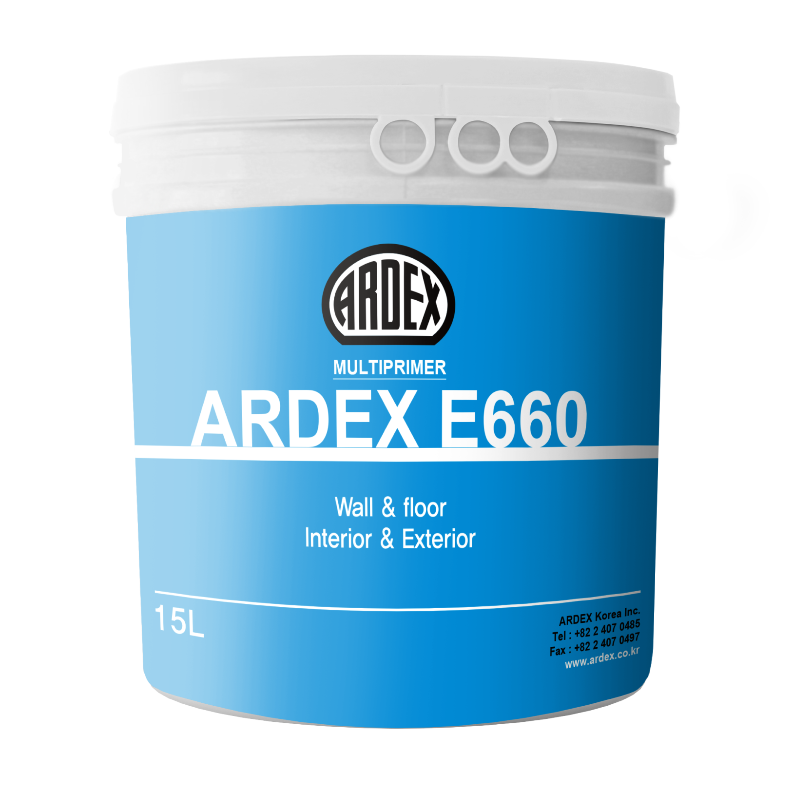
적용 바탕면
콘크리트·시멘트 몰탈 표면
각종 시멘트·석고보드 표면
다공성·흡수율 높은 바탕면
WPM 003 방수 시공 전 프라이머
제품 스펙
소요량 75㎡ / 15L
소요량 15㎡ / 3L
용량 3L, 15L / Bucket
롤러·붓으로 1~2회 도포
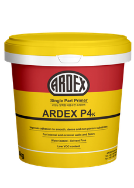
사용 용도 · 바탕면
ARDEX 타일 접착제·자동수평몰탈·방수제의 프라이머
기존 타일면(Tile-on-Tile), 우레탄·아스팔트 도막방수
OSB·합판·MDF, 콘크리트·미장·ALC
금속·철판 등 흡수력 없는 바탕면 (내·외부 벽/바닥)
제품 스펙
무용제 일액형 수용성 — 냄새 없음
사용량 약 24~40㎡ / 4kg
붓·롤러로 1~2회 도포
자동수평몰탈·고흡수면은 물 10%까지 혼합
📄
ARDEX P 4 K 기술 자료 (PDF)
클릭하면 전체 자료를 볼 수 있습니다 ↗
클릭하면 전체 자료를 볼 수 있습니다 ↗
▶ 참고 영상 (이론 설명용)
▶ ARDEX P 4 K 시공 영상
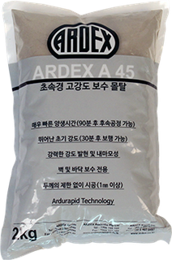
사용 상황
바닥·벽면 균열·단차 보수
타일 시공 전 바탕면 평탄화
콘크리트 결함·구멍 충전
제품 스펙
용량 25kg / 2kg
소요량 1.6㎏/㎡/mm
시공 온도 5℃ ~ 35℃
ARDURAPID 무수축 기술
📄
ARDEX A 45 기술 자료 (PDF)
클릭하면 전체 자료를 볼 수 있습니다 ↗
클릭하면 전체 자료를 볼 수 있습니다 ↗
▶ ARDEX A 45 제품·시공 영상
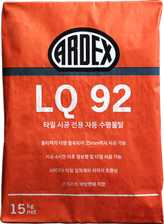
사용 상황
실내 콘크리트 바닥 단차·불균일 평탄화
타일 시공 전 바탕면 자동 수평
난방(온돌) 공간에도 시공 가능
제품 스펙
1회 최대 25mm 시공
혼합비 분말 15kg : 물 약 3L
소요량 3.1㎡ / 15kg (두께 3mm)
시공 온도 10℃ ~ 35℃
📄
ARDEX LQ 92 기술 자료 (PDF)
클릭하면 전체 자료를 볼 수 있습니다 ↗
클릭하면 전체 자료를 볼 수 있습니다 ↗
▶ ARDEX LQ 92 제품·시공 영상
프라이머 선택 요약표
| 바탕면 종류 | 사용 프라이머 | 비고 |
|---|---|---|
| 콘크리트·시멘트 미장 | E 660 | 1~2회 도포 |
| 석고보드·CRC보드 | E 660 | 흡수율 높아 필수 |
| 기존 타일 위 재시공 | P 4 K | E 660 사용 불가 |
| 금속·유리면 | P 4 K | 흡수력 없는 면 |
| 합판·OSB·MDF | P 4 K | 흡수면이나 뒤틀림(변형) 방지 위해 예외 적용 |
| ALC 블록 | E 660 | 흡수율 매우 높음 |
2 STEP 2 — 방수 시공
물이 닿는 공간엔
방수층이 먼저입니다
방수층이 먼저입니다
욕실·화장실·발코니·세탁실 등 습기가 있는 모든 공간은 타일 접착 전에 방수층을 만들어야 합니다. 방수를 생략하면 장기적으로 누수·곰팡이·타일 들뜸 하자로 이어집니다.
실리콘 시공 (방수 전 실링)
왜 방수 전에 실리콘인가요? ARDEX 방수 시공 매뉴얼에서는 프라이머 도포 후, 벽-바닥 코너·배관 관통부·이질재 접합부처럼 움직임(이동)이 집중되는 취약부를 실리콘으로 먼저 실링합니다. 이후 방수테이프·도막방수를 시공하면 취약부에서의 방수층 파단을 줄일 수 있습니다. (STEP 4의 줄눈 후 마감 실리콘과는 다른 단계입니다.)
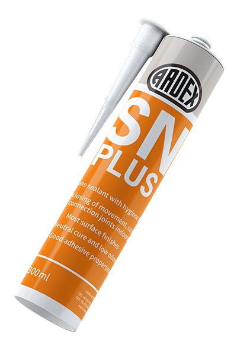
실링 부위
벽-바닥이 만나는 코너·구석
배관·드레인 등 관통부 주위
이질재(금속·창호 등) 접합부
이동·수축이 예상되는 조인트
시공 요령
프라이머 완전 건조 후 실링
틈을 메우듯 균일하게 충전
완전 경화 확인 후 방수 진행
제품 상세는 STEP 4 실리콘 마감 참조
📄
ARDEX SN PLUS 기술 자료 (PDF)
클릭하면 전체 자료를 볼 수 있습니다 ↗
클릭하면 전체 자료를 볼 수 있습니다 ↗
방수 시공 순서
욕실·화장실 방수 시공 흐름
프라이머(E 660) 도포 완료 후 진행
1
실리콘 실링 — 방수 전
ARDEX SN PLUS
코너·조인트·관통부 등 움직임이 예상되는 부위를 실리콘으로 먼저 실링합니다. 완전 경화된 뒤 아래 방수 시공을 진행합니다.
2
코너·취약부 방수테이프 부착
SK 90 / SK 90 INCORNER / 부틸 인코너
벽-바닥 접합부, 파이프 주위, 균열 있는 곳에 먼저 부착합니다.
3
방수 도막 1회차 도포
ARDEX WPM 003
롤러나 붓으로 균일하게 전체 도포합니다.
4
건조 후 2회차 도포
ARDEX WPM 003
재도포 간격: 1~2시간 (23℃, 습도 50% 조건). 1회차가 지촉 건조되면 직각 방향으로 2회차를 도포합니다.
5
완전 건조 확인 후 타일 시공
2회차 도포 후 4~6시간 건조하면 타일 시공 가능. 규사 살포 없이 방수면에 직접 타일 접착제를 사용합니다. (완전 경화 48시간)
▶ 욕실·화장실 방수 시공 영상
제품 상세
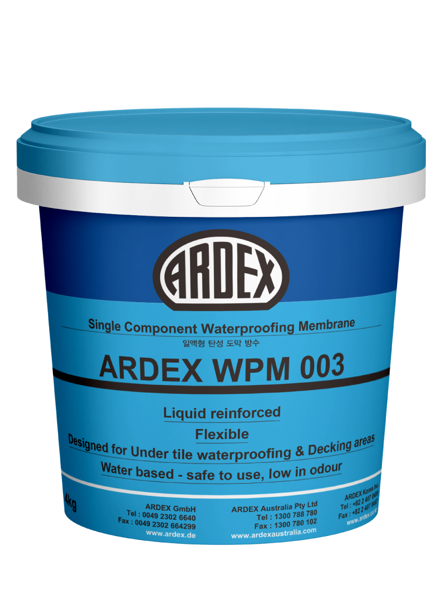
주요 특징
일액형 — 별도 혼합 없이 사용
건조 후 방수면에 바로 타일 시공 가능
Micro섬유 보강 — 인장강도 우수
냄새 거의 없음 (실내 시공 적합)
목조주택에도 적합 (도막 복원력)
제품 스펙
소요량 12㎡/mm / 16kg
소요량 3㎡/mm / 4kg
용량 4kg, 16kg / Bucket
건조 4시간 (23℃, 50% 기준)
📄
ARDEX WPM 003 기술 자료 (PDF)
클릭하면 전체 자료를 볼 수 있습니다 ↗
클릭하면 전체 자료를 볼 수 있습니다 ↗
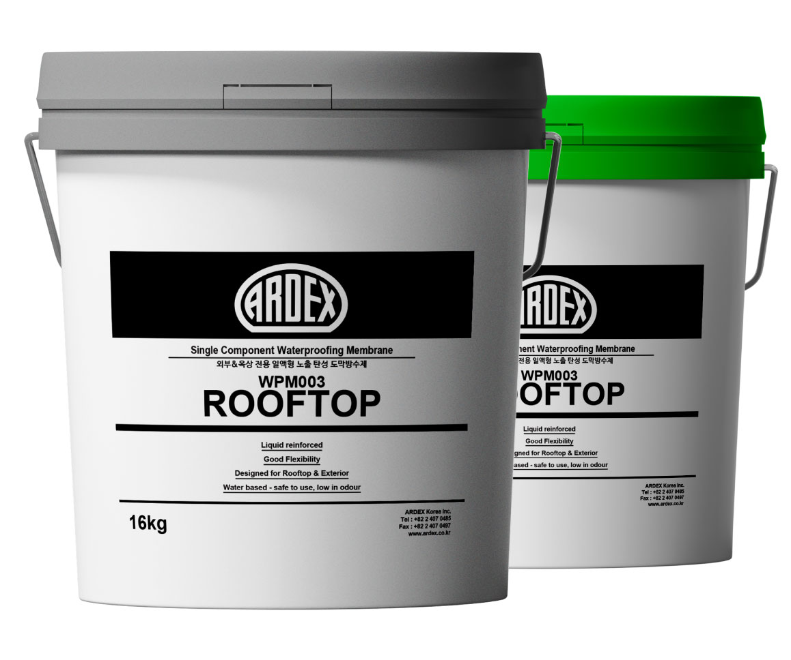
자외선 노출 환경에서 사용 가능 (일반 WPM 003과 다른 점)
타일 미시공 상태로 노출 마감 가능
발코니·테라스·옥상 방수에 적합
📄
ARDEX WPM 003 ROOFTOP 기술 자료 (PDF)
클릭하면 전체 자료를 볼 수 있습니다 ↗
클릭하면 전체 자료를 볼 수 있습니다 ↗
▶ ARDEX WPM 003 ROOFTOP 시공 영상
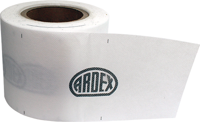
SK 90: 직선 균열·이음부 보강용
SK 90 INCORNER: 내코너 전용 성형 테이프 — 욕실 코너에 최적
WPM 003 도포 전 코너·파이프 주위에 먼저 부착
코너 부위 주의: 벽과 바닥이 만나는 코너, 파이프 주위는 도막방수만으로는 부족합니다. SK 90 방수테이프를 먼저 부착한 후 WPM 003을 도포해야 합니다.
3 STEP 3 — 타일 접착제
타일 크기와 공간에 맞는
등급을 선택하세요
등급을 선택하세요
타일 크기·무게·시공 장소에 따라 요구되는 접착 등급이 달라집니다. 특히 대형 포셀린 타일은 반드시 고탄성(S2) 제품을 사용해야 장기적인 들뜸을 방지할 수 있습니다.
등급 읽는 법: C = 시멘트계 (숫자 클수록 접착력 강함) / S = 탄성 (S1 기본탄성, S2 고탄성) / E = 오픈타임 연장 / F = 초속경. 대형타일·온돌·담수 공간일수록 높은 등급이 필요합니다.
타일 종류별 접착제 선택
타일 특성 읽는 법: 타일은 흡수율로 나뉩니다. 흡수율이 낮을수록(포세린) 물·접착제를 안 빨아들여 접착이 까다롭고 무거워, 더 강력·고탄성 접착제가 필요합니다. 흡수율이 높을수록(도기질) 가볍고 주로 벽에 씁니다.
타일 종류별 접착제 선택
| 타일 종류 (흡수율) | 특성 | 권장 접착제 |
|---|---|---|
| 포세린 · 대형 박판 BIa · 0.5% 이하 | 흡수 최저 → 접착 까다로움, 무겁고 큼 | X 18 Premium / X 18 개량압착 필수 |
| 자기질 · 폴리싱 BIb · 0.5~3% | 흡수 낮음, 표준~대형 크기 | X 18 / X 18 Premium |
| 세라믹 · 모자이크 BIIa · 3~6% | 중간 흡수, 소형은 개별 탈락 주의 | X 18 계열 / QUICKBOND |
| 도기질 벽타일 BIII · 10% 초과 | 흡수 높음·가벼움, 주로 벽 | D 30(일액형·실내벽) / X 18 |
| 천연석(대리석·화강석) | 습기에 변색·백화 가능 | 백색 접착제(X 18 백색) 권장 |
타일 분류·흡수율은 ISO 13006 / KS L 1001 국제·국가 표준 기준, 제품 권장은 ARDEX 제품 데이터시트 기준입니다. 천연석 백색 접착제 권장은 일반 시공 상식입니다.
주요 시공 공법
공법이 왜 중요한가: 타일이 크고 무겁고 흡수율이 낮을수록(포셀린) 뒷면 공극(빈 공간)이 들뜸·탈락의 가장 큰 원인입니다. 대형·포셀린은 반드시 개량압착+백버터링으로 공극을 없애야 합니다.
떠붙임 (떠발이)전통 공법
타일 뒷면에 붙임 모르타르를 두툼하게 올려(12~24mm) 바탕에 눌러 붙이는 가장 오래된 습식 공법.
주로 벽타일 · 요철 바탕 조절이 쉬우나 숙련이 필요하고 뒷면 공극이 생기기 쉬움
압착 붙임표준 공법
바탕면에 접착제를 흙손으로 평탄하게 펴 바르고 타일을 눌러 붙이는 공법.
중소형 타일에 적합 · 1회 바름면적을 넓게 하면 오픈타임 초과 주의
개량압착대형·포셀린 필수
바탕면 + 타일 뒷면 양쪽에 접착제를 도포(붙임 3~6mm)해 공극을 최소화하는 공법.
대형 박판·포셀린·중량 타일 필수 — 뒷면 밀착률을 높여 들뜸을 방지
백버터링 (배면처리)개량압착의 핵심
타일 뒷면(배면)에 접착제를 얇게 펴 발라주는 작업. 개량압착과 함께 적용합니다.
비흡수·대형 타일의 뒷면 접촉률을 100%에 가깝게 — 공극 제거의 핵심
떠붙임·압착·개량압착은 국가건설기준 KCS 41 48 01(타일공사 표준시방서) 기준입니다. 붙임 두께: 떠붙임 12~24mm, 개량압착 3~6mm. 백버터링(배면처리)은 개량압착의 핵심 요소로, ARDEX 데이터시트도 대형·포셀린 타일에 개량 압착 시공을 명시합니다.
▶ 타일 접착제 시공 공법 영상
제품 상세
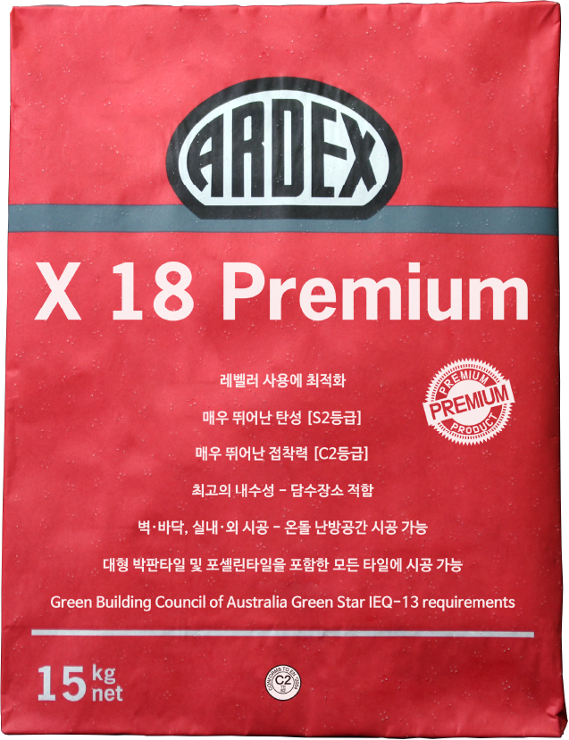
주요 특징
C2등급 — 접착력 매우 강력
S2등급 — 최고 탄성
오픈타임 길어 시공 편리 (E등급)
미 양생 콘크리트에도 시공 가능
모든 담수 장소에 적합
실내·외, 벽·바닥, 온돌 난방 모두 가능
제품 스펙
소요량 4㎡/15kg (10mm 흙손)
소요량 5㎡/15kg (6mm 흙손)
용량 15kg / Bag
📄
ARDEX X 18 Premium 기술 자료 (PDF)
클릭하면 전체 자료를 볼 수 있습니다 ↗
클릭하면 전체 자료를 볼 수 있습니다 ↗
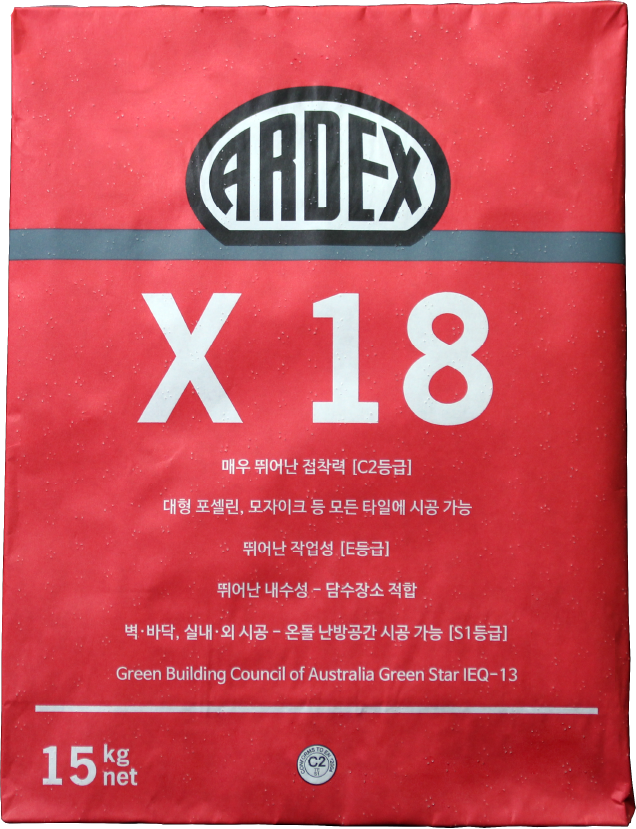
주요 특징
Micro섬유 보강 — 강력·안정적 접착
S1등급 탄성 우수
골재 비율 낮아 작업성 뛰어남
수영장·습윤 장소 접착력 우수
제품 스펙
소요량 4㎡/15kg (10mm 흙손)
소요량 5㎡/15kg (6mm 흙손)
용량 15kg / Bag, 색상: 백색
📄
ARDEX X 18 기술 자료 (PDF)
클릭하면 전체 자료를 볼 수 있습니다 ↗
클릭하면 전체 자료를 볼 수 있습니다 ↗
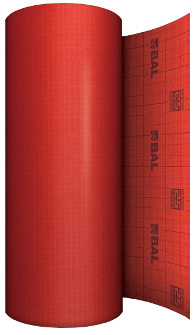
주요 특징
콘크리트 바닥의 수축균열에 대응 — 타일(마감재)의 탈락·균열을 방지
온돌 난방바닥·목재바닥에 적합
포셀린·세라믹·자연석·PC콘크리트 시공 가능
합판·OSB 등 목재바닥 조인트 거동에도 대응력 우수
주거·상업공간 실내바닥 및 리모델링 공사에 적합
2mm 이하의 균열 및 거동에 적합
기술 데이터
색상: Red
구성: 특수섬유 + 유리섬유 + 특수섬유
포장: 폭 1m × 길이 30m / Roll
두께: 0.85mm
무게: 270g/㎡ · 8.5kg/Roll
▶ 디커플링 매트 시공 영상
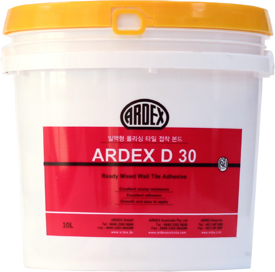
혼합 없이 바로 사용 — 내수성 매우 우수
포세린·도기질·자기질 타일 적합 / 용량 10L
📄
ARDEX D 30 기술 자료 (PDF)
클릭하면 전체 자료를 볼 수 있습니다 ↗
클릭하면 전체 자료를 볼 수 있습니다 ↗
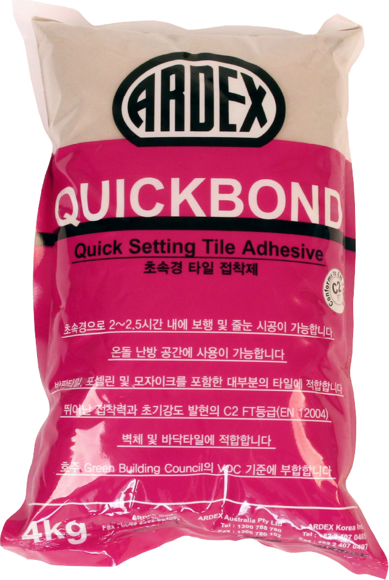
초속경 경화 — 공사 기간 단축
긴급 보수 또는 빠른 오픈이 필요한 현장에 적합
📄
ARDEX QUICKBOND 기술 자료 (PDF)
클릭하면 전체 자료를 볼 수 있습니다 ↗
클릭하면 전체 자료를 볼 수 있습니다 ↗
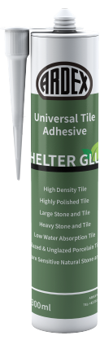
주요 특징
무거운 물체를 벽에 접착하는 데 적합 (수직 고정)
대부분의 표면에 접착력이 매우 뛰어남
탄성이 뛰어나 충격·진동을 흡수
솔벤트·실리콘·이소시아네이트 미포함
대부분의 바탕면에 프라이머 없이 시공 가능
자외선에 강하며, 수성·유성 도장면에도 사용 가능
경화 과정에서 수축이 없음
기술 데이터 (제조사 TDS 기준)
재질: MS폴리머 / 색상: White paste
경화 방식: 습기경화 / 지촉건조: 약 15~20분
경화 속도: 약 5mm/24h / 처짐(Sagging): 0mm
쇼어 A 경도: 약 55 / 수축률: ≤1%
신장율: ≥300% / 인장강도: ≥4.0 N/mm²
내열 범위: -40℃ ~ +90℃ / 시공온도: +5℃ ~ +40℃
▶ SHELTER GLUE 시공 영상
📄
ARDEX SHELTER GLUE 기술 자료 (PDF)
클릭하면 전체 자료를 볼 수 있습니다 ↗
클릭하면 전체 자료를 볼 수 있습니다 ↗
접착제 등급별 비교표
| 제품명 | 접착등급 | 탄성등급 | 대형타일 | 담수 공간 | 온돌 |
|---|---|---|---|---|---|
| X 18 Premium | C2 | S2 ★ | ✓ | ✓ | ✓ |
| X 18 | C2 | S1 | ✓ | ✓ | ✓ |
| D 30 | D2 | — | — | — | — |
| QUICKBOND | C2F | — | △ | — | ✓ |
| SHELTER GLUE MS폴리머 카트리지 | 해당없음* | 해당없음* | △** | — | — |
* SHELTER GLUE는 시멘트계가 아닌 MS폴리머 카트리지 접착제·실란트로, 위 C(접착)/S(탄성) 등급 체계가 적용되지 않습니다. ** 바닥 전체 시공용이 아닌 수직 중량물 고정·이종 재질 접착·부분 보수용 특수 제품입니다. 담수·온돌 항목은 제조사가 별도 인증하지 않아 "—"로 표기했습니다.
4 STEP 4 — 줄눈 · 실리콘 마감
줄눈을 넣고
꺾임부는 실리콘으로 마감합니다
꺾임부는 실리콘으로 마감합니다
타일 접착제가 완전히 경화된 후 줄눈을 시공합니다. 일반 욕실·주방은 시멘트계 줄눈(FG4), 수영장·담수 공간이나 내오염성이 중요한 곳은 에폭시계 줄눈(EG15)을 사용합니다.
▶ 줄눈·실리콘 마감 시공 영상
제품 상세
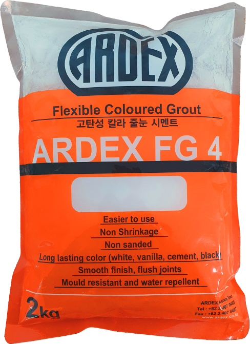
주요 특징
탄성 뛰어나 충격 흡수
부드러운 미분말 — 타일 흠 없음
항균력·내후성·내약품성 우수
무독성, 인체 무해
제품 스펙·용도
줄눈 너비 ~4mm (실내·외)
용량 2kg × 8ea / Box
욕실·화장실·주방·호텔·백화점
포셀린·세라믹·대리석·모자이크
📄
ARDEX FG 4 기술 자료 (PDF)
클릭하면 전체 자료를 볼 수 있습니다 ↗
클릭하면 전체 자료를 볼 수 있습니다 ↗
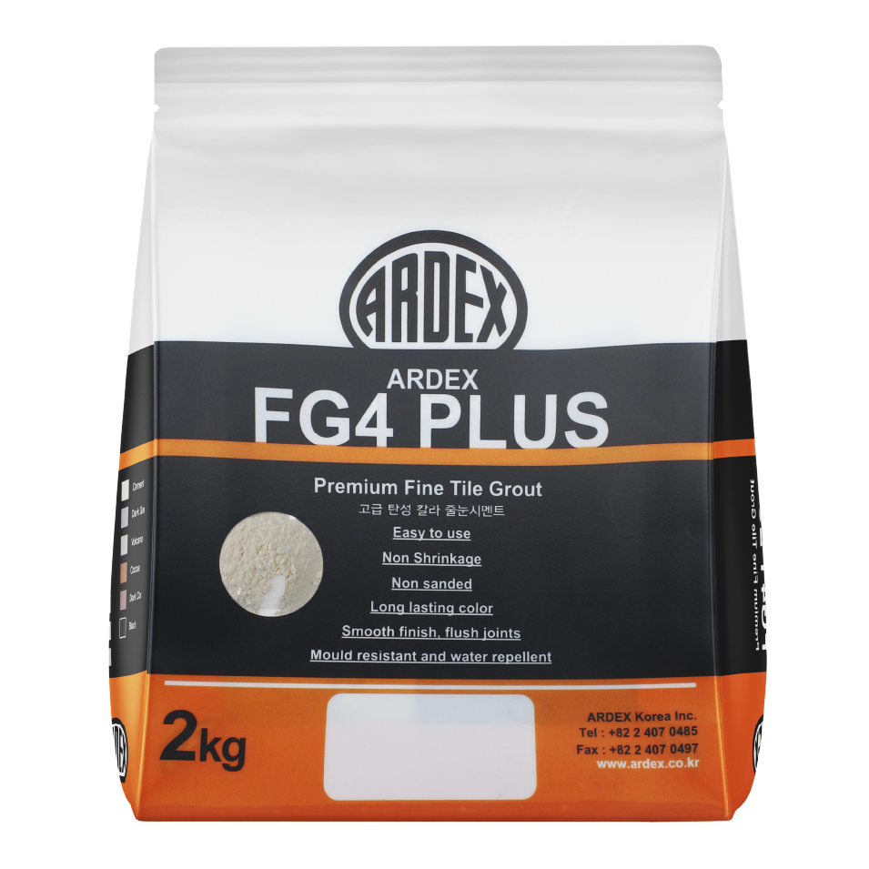
FG 4 대비 탄성 강화 버전 — 동일한 색상·적용 체계 유지
충격이 많은 바닥, 수축팽창이 큰 외부 공간에 유리
📄
ARDEX FG 4 PLUS 기술 자료 (PDF)
클릭하면 전체 자료를 볼 수 있습니다 ↗
클릭하면 전체 자료를 볼 수 있습니다 ↗
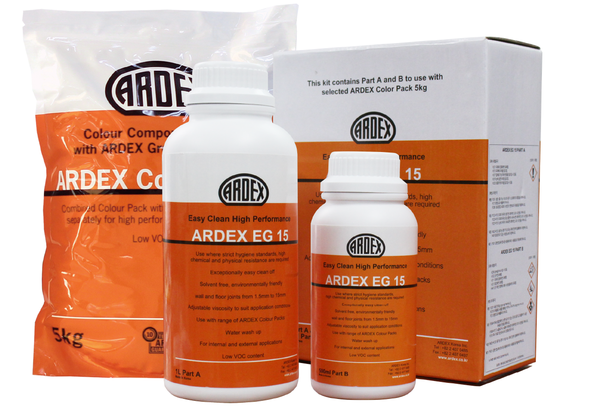
주요 특징
내오염성·내화학성 매우 우수
수영장 포함 모든 담수 공간 적합
줄눈 폭 1.5mm~15mm 가능
무용제 친환경 (Low VOC, APEO free)
구성·스펙
Part A (주제) 1.0kg
Part B (경화제) 0.5kg
Part C (분말) 5.0kg
Total 6.5kg / Set, 4 Set / Box
📄
ARDEX EG 15 기술 자료 (PDF)
클릭하면 전체 자료를 볼 수 있습니다 ↗
클릭하면 전체 자료를 볼 수 있습니다 ↗
줄눈제 선택 기준
| 공간·상황 | 권장 줄눈제 | 이유 |
|---|---|---|
| 일반 욕실·화장실 | FG 4 / FG 4 PLUS | 항균·탄성·시공 편리 |
| 수영장·담수 공간 | EG 15 에폭시 | 내화학성·방수성 필수 |
| 주방·상업 공간 | FG 4 or EG 15 | 오염 기준에 따라 선택 |
| 줄눈 너비 4mm 초과 | EG 15 (최대 15mm) | 넓은 줄눈 폭 대응 |
실리콘 코너 마감
벽과 바닥이 만나는 코너, 욕조·세면대 주변, 타일과 다른 재료가 만나는 부위는 줄눈재가 아닌 실리콘으로 마감해야 수축·팽창을 흡수할 수 있습니다. 줄눈재로 이 부위를 처리하면 균열이 생깁니다.
SN PLUS 색상 선택 팁: FG 4 줄눈 색상과 동일한 색상 라인업이 있습니다. 줄눈과 실리콘 색상을 맞추면 훨씬 깔끔한 마감을 얻을 수 있습니다. (투명 포함 총 14가지 색상)

주요 특징
위생 공간에 적합
탄성·복원력 매우 우수
비초산형 — 자극적 냄새 없음
변색 거의 없음
FG 4 줄눈 색상과 매칭 가능
용도·스펙
코너·파이프 주위 실링
욕조·세면대·싱크대 조인트
타일과 타일 사이 실링
300ml / Cartridge, 25ea / Box
📄
ARDEX SN PLUS 기술 자료 (PDF)
클릭하면 전체 자료를 볼 수 있습니다 ↗
클릭하면 전체 자료를 볼 수 있습니다 ↗
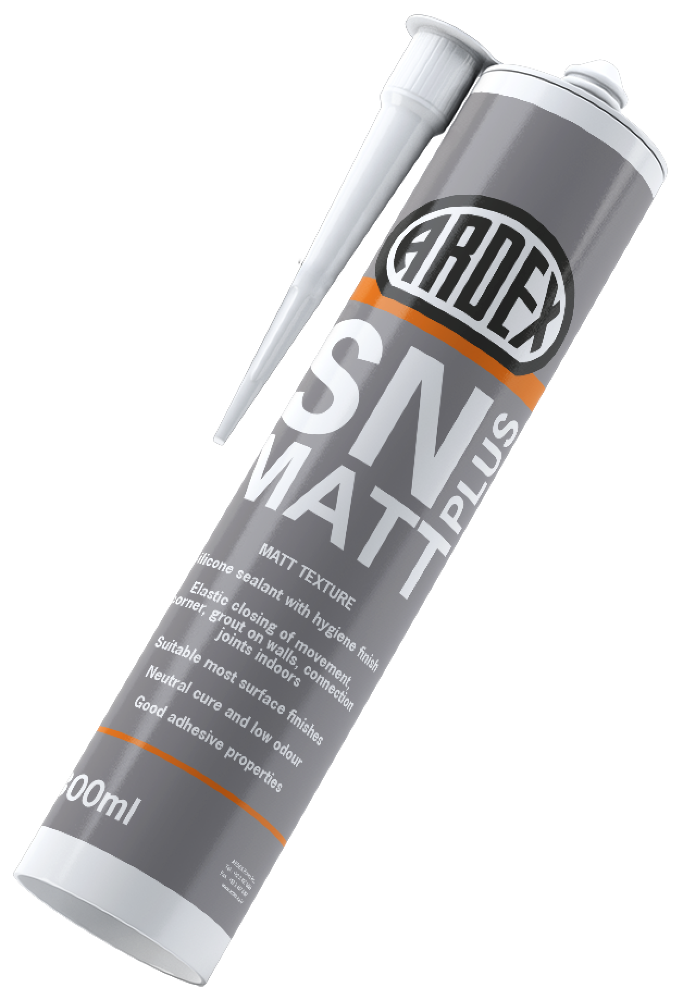
SN PLUS의 무광(매트) 버전 — 광택 없는 세련된 마감
무광 타일과 조합 시 통일감 있는 마감에 적합
📄
ARDEX SN PLUS MATT 기술 자료 (PDF)
클릭하면 전체 자료를 볼 수 있습니다 ↗
클릭하면 전체 자료를 볼 수 있습니다 ↗
실리콘 시공 부위 정리
SN PLUS 적용 위치
줄눈재 대신 실리콘을 써야 하는 곳
①
벽-바닥 코너 (내코너)
수축·팽창이 집중되는 부위. 줄눈재로 처리하면 반드시 균열이 생깁니다.
②
욕조·세면대·싱크대 주변
타일과 위생기구 사이 — 수분 침투 방지에 필수적입니다.
③
드레인(하수구) 주위
타일과 배수구 틀이 만나는 경계.
④
타일과 이질 재료 접합부
타일과 마루·유리·금속 등 다른 재료가 만나는 곳.
▶ 줄눈 시공 방법 영상 (줄눈 넣기부터 마감까지)
❓ 자주 묻는 질문
궁금한 것을 먼저
확인해 보세요
확인해 보세요
타일 시공 시 자주 발생하는 질문과 제품 선택 고민을 정리했습니다.
욕실 방수를 생략해도 되나요?
﹀
욕실·화장실·발코니처럼 물이 닿는 공간은 방수 시공이 필수입니다. WPM 003을 2회 도포하면 건조 후 방수면에 바로 타일 접착제를 사용할 수 있습니다. 방수를 생략하면 장기적으로 타일 들뜸·누수·곰팡이 하자로 이어집니다.
대형 포셀린 타일에는 어떤 접착제를 써야 하나요?
﹀
대형 박판 포셀린 타일에는 X 18 Premium(C2·S2 등급)을 권장합니다. 탄성이 가장 높아 타일의 수축·팽창을 흡수하고, 흡수율이 낮은 포셀린에도 강력한 접착력을 발휘합니다. 시공 시 개량 압착법으로 타일 뒷면에도 접착제를 도포하는 것이 중요합니다.
FG 4와 EG 15의 차이는 무엇인가요?
﹀
FG 4는 시멘트계 줄눈으로 일반 욕실·주방에 적합합니다. EG 15는 에폭시 줄눈으로 수영장·담수 공간, 오염에 강해야 하는 상업 공간에 사용합니다. EG 15는 3가지 성분(A·B·C)을 혼합해야 하고 시공 난이도가 높지만, 내오염성과 내화학성이 훨씬 뛰어납니다.
기존 타일 위에 새 타일을 붙일 수 있나요?
﹀
가능합니다. 단, 기존 타일에 들뜸이나 균열이 없어야 합니다. 시공 전 P 4 K 비흡수면 프라이머를 도포한 후 X 18 Premium처럼 탄성이 높은 접착제(S2 등급)를 사용해야 합니다. 일반 E 660 프라이머는 타일 면에 사용할 수 없으니 반드시 구분하세요.
프라이머를 꼭 발라야 하나요?
﹀
바탕면이 콘크리트·미장처럼 흡수율이 높은 경우 반드시 프라이머를 발라야 합니다. 생략하면 접착제의 수분이 바탕면에 빠르게 흡수되어 접착 불량이 생깁니다. 흡수면엔 E 660, 기존 타일 등 비흡수면엔 P 4 K를 사용합니다.
코너에 줄눈재를 채워도 되나요?
﹀
권장하지 않습니다. 벽과 바닥이 만나는 코너, 욕조·세면대 주변은 건물이 미세하게 수축·팽창하는 움직임이 지속적으로 집중되는 부위입니다. 줄눈재(그라우트)는 단단하게 굳는 재질이라 이런 움직임을 흡수하지 못합니다. 소형 욕실은 움직임 폭이 작아 당장은 괜찮아 보일 수 있지만, 구조적으로 취약한 상태이기 때문에 시간이 지나면서 결국 균열이나 박리로 이어집니다. 그래서 이 부위는 반드시 탄성이 있는 SN PLUS 실리콘으로 마감해야 합니다.
참고: 이는 아덱스만의 기준이 아니라, 국제 타일 시공 표준(TCNA EJ171)에서도 코너·경계 부위는 그라우트가 아닌 유연한 실란트로 마감하도록 명시하고 있는 업계 공통 원칙입니다.
바닥이 울퉁불퉁한데 어떻게 해야 하나요?
﹀
작은 단차·균열은 A 45 보수몰탈로 먼저 채웁니다. 넓은 구간의 수평이 문제라면 LQ 92 셀프레벨링 수평몰탈을 사용하면 자동으로 수평이 잡힙니다. 평탄화 후 프라이머(E 660) → 접착제 순서로 진행합니다.